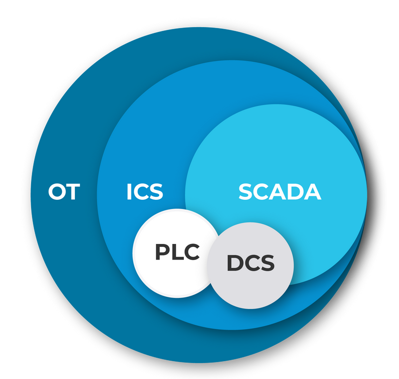
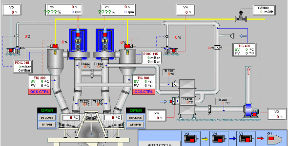
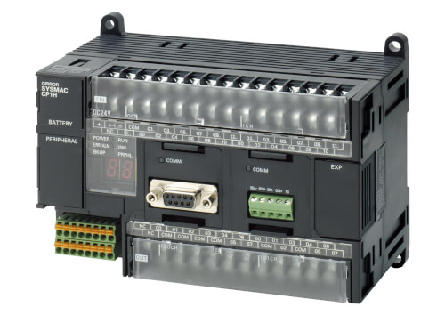
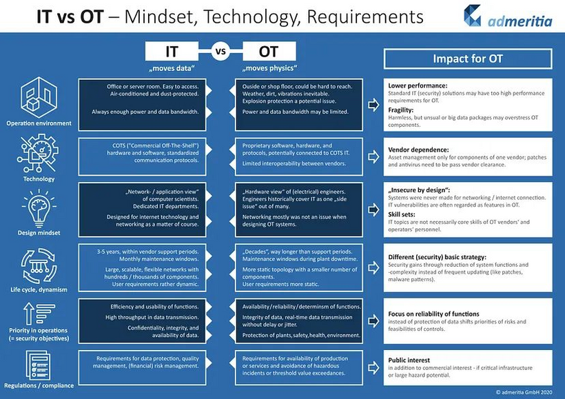

Introduction to OT/ICS¶

Operational Technology (OT) encompasses the systems that monitor and control industrial operations. Within OT, Industrial Control Systems (ICS) are the technologies that automate and manage industrial processes.

IT professionals have decades of experience securing networks, systems and applications, but cybersecurity in OT/ICS is a relatively new concern. In industrial environments, availability takes priority over integrity and confidentiality: ICS software is often designed for speed and efficiency rather than security. This difference makes OT/ICS systems uniquely vulnerable to cyber threats.
OT (Operational Technology)¶
OT is the hardware and software used to monitor, control and automate industrial processes, critical infrastructure and manufacturing plants. It differs from IT (Information Technology) because its primary focus is operational continuity and physical safety, whereas IT is concerned with data management and cybersecurity.
Key OT components:
- Industrial Control Systems (ICS).
- Sensors and actuators.
- Supervisory and control systems (SCADA, DCS).
- Embedded devices (PLC, RTU).
- Industrial networks (Industrial Ethernet, Modbus, Profibus, etc.).
ICS (Industrial Control Systems)¶
ICS are a subset of OT that includes all the technologies used to monitor and control automated industrial processes. They are deployed in manufacturing, energy, transportation, utilities and other critical industries to ensure safe and efficient operations.
Types of ICS:
- SCADA (Supervisory Control and Data Acquisition).
- DCS (Distributed Control System).
- PLC (Programmable Logic Controller).
- RTU (Remote Terminal Unit).
SCADA (Supervisory Control and Data Acquisition)¶
SCADA is a supervisory system used to monitor and control industrial processes distributed over large geographical areas, such as power grids, pipelines and water treatment plants. It collects data from remote sensors and devices, so that operators can make decisions in real time.
Key SCADA components:
- Supervisory computers: centralized servers that collect and process data from field devices (PLCs, RTUs) and provide visualization tools for operators.
- Human-Machine Interface (HMI): the graphical interface that operators use to monitor and control industrial processes.
- Communication networks: the infrastructure that connects the SCADA components (Ethernet, serial, radio, cellular, satellite).
- Remote Terminal Units (RTU): remote field devices that collect data from sensors and transmit it to the SCADA system.
- Programmable Logic Controllers (PLC): controllers that execute real-time logic and automation tasks.
DCS (Distributed Control System)¶
A DCS is an automation system designed for real-time process control in large, localized industrial facilities, such as oil refineries, chemical plants and power plants. Unlike SCADA, which is optimized for wide-area monitoring, a DCS is designed for tightly integrated process control within a single site.

Key DCS components:
- Process Control Units (PCU): localized control units that manage industrial processes in real time.
- Field devices (sensors, actuators, valves, etc.): interface directly with the physical processes.
- Engineering workstations: used to configure and optimize the control logic.
- Operator consoles (HMI): interfaces to monitor and manage plant operations.
- Industrial communication networks: connect the different DCS components (e.g., Fieldbus, Profibus, OPC-UA).
PLC (Programmable Logic Controller)¶
A PLC is a specialized industrial computer used to control machinery and processes in manufacturing and automation environments. PLCs are essential components of both SCADA and DCS systems, because they provide real-time monitoring and decision-making.

Key PLC features:
- Real-time operation: executes logic based on the inputs from sensors and generates outputs to control machinery.
- Modular architecture: allows customization with input/output (I/O) modules.
- Industrial protocol support: communicates via Modbus, PROFINET, EtherCAT and other protocols.
- High reliability: designed for continuous operation in harsh environments.
Summary of Key Differences¶
| System | Primary Function | Best for | Geographical Scope | Control Approach |
|---|---|---|---|---|
| OT | Industrial operations and automation | Manufacturing, utilities, energy | Local and global | Ensures uptime and safety |
| ICS | Monitoring and controlling industrial processes | Industrial environments | Local and global | Integrates SCADA, DCS, PLC, RTU |
| SCADA | Supervisory control and data acquisition | Remote monitoring (e.g., power grids, pipelines) | Large-scale, geographically distributed | Centralized monitoring |
| DCS | Real-time process automation and control | Complex, high-precision manufacturing (e.g., chemical plants, oil refineries) | Localized within a facility | Distributed control with redundancy |
| PLC | Logic execution and machine control | Automated processes (e.g., assembly lines, robotic systems) | Localized control | Executes predefined automation logic |
IT vs. OT: Key Differences¶
IT and OT are increasingly interconnected, but they differ in priorities, lifecycle management and security approach:
- System lifecycle: IT systems typically have a 3-5 year lifecycle, with frequent upgrades and replacements. OT systems are built for longevity and often operate for 10-30 years without major changes.
- Patching and updates: in IT, regular updates and patches are standard practice to mitigate vulnerabilities. In OT, patching is infrequent or even impossible, because downtime can disrupt critical industrial processes.
- Priorities: IT security protects data (confidentiality, integrity, availability), in that order of concern. OT prioritizes safety, availability and uptime: an industrial system must run without interruption, even at the expense of data protection.
- Risk approach: IT deals with cybersecurity risks, such as data breaches and malware. OT must consider both cyber and physical risks, because failures can lead to equipment damage, environmental hazards or even loss of life.
These differences make OT environments harder to secure and require specialized cybersecurity strategies that balance safety, reliability and risk management.

Final Thoughts¶
Understanding the differences between OT, ICS, SCADA, DCS and PLCs is essential for anyone working in industrial automation, cybersecurity or operational technology. As IT and OT converge, securing these systems against cyber threats becomes increasingly important.
In simple terms:
- Industrial operations rely on sophisticated, mission-critical computer systems (SCADA).
- In OT/ICS environments, security is not the top priority: availability and uptime come first.
- Operators can manually override plant operations with a mouse, keyboard or touchscreen, both locally and remotely.
- Malicious software can manipulate plant behavior in the same way an authorized operator would through the HMI.
For a deeper understanding, refer to the Guide to Industrial Control Systems (ICS) Security (NIST 800-82).